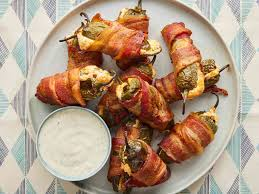

Home
Bacon Wrapped Jalepenos

Description:
A bacon wrapped jalapeño popper is a bold and savory appetizer made by stuffing
fresh jalapeño peppers with a creamy cheese filling — often a mix of cream cheese,
cheddar, or spices — and then wrapping them in crispy, smoky bacon.
Baked or grilled to perfection, they strike the perfect balance between spicy, creamy, and crunchy,
making them a crowd-pleasing snack for game day, parties, or backyard BBQs.
Bacon Wrapped Jalepenos Often Contain:
- Fresh Jalepeno Peppers
- Cream Cheese
- Cheddar Cheese
- Onion Powder and Garlic Powder
- Salt and Pepper
- Toothpicks
Steps:
- Preheat oven to 400 F
- Slice each jalepeno lengthwise and remove the seeds
- In a bowl, mix together cream cheese, cheddar cheese, and all of the spices
- Fill each jalepeno with the mixture in the bowl
- Wrap each jalepeno with half a piece of bacon and use a toothpick to secure
- Place each jalepeno on a foil lined baking sheet and put into oven
- Let bake in oven for 20-25 minutes or until the bacon is cooked
- Let cool and enjoy!